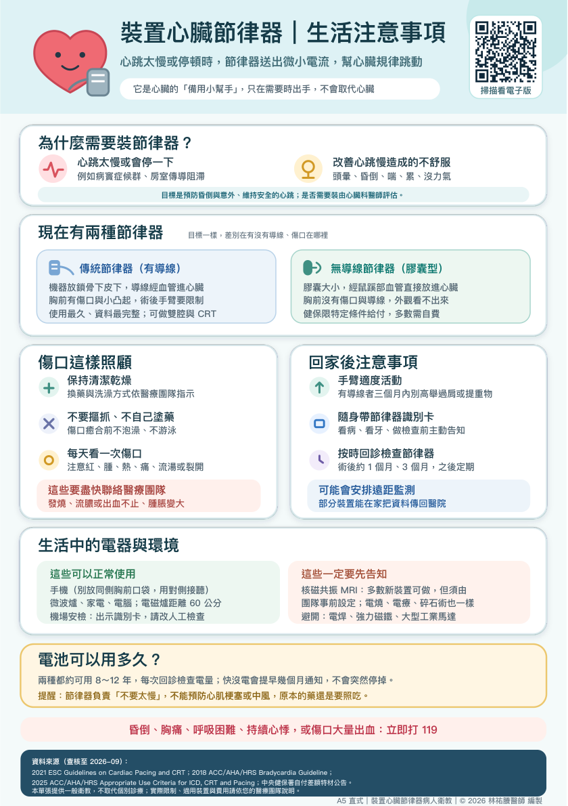

為什麼需要裝節律器？
尚未播放
查看原始衛教圖卡

原稿來源與說明
資料來源（查核至 2026-09）：
2021 ESC Guidelines on Cardiac Pacing and CRT；2018 ACC/AHA/HRS Bradycardia Guideline；
2025 ACC/AHA/HRS Appropriate Use Criteria for ICD, CRT and Pacing；中央健保署自付差額特材公告。
本單張提供一般衛教，不取代個別診療；實際限制、適用裝置與費用請依您的醫療團隊說明。
A5 直式｜裝置心臟節律器病人衛教｜© 2026 林祐賸醫師 編製